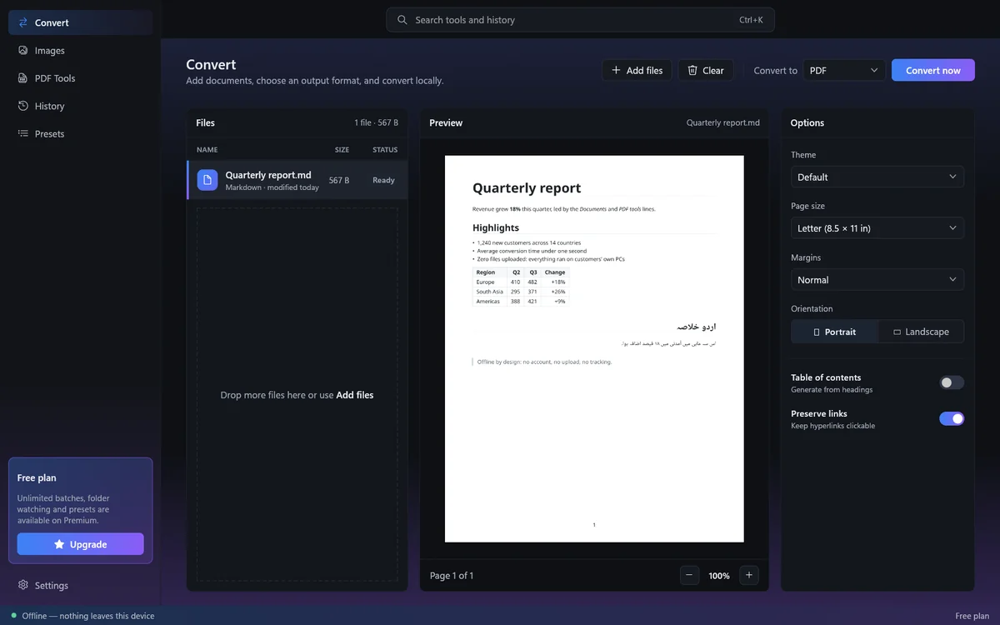
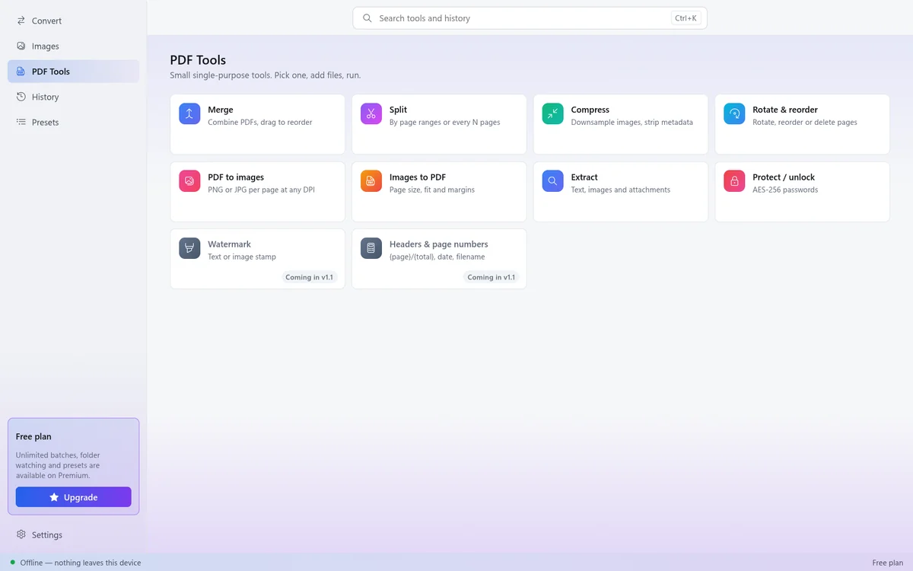

LocalCast Doc Converter
Convert documents, spreadsheets, images and PDFs on your own Windows PC. Your files never leave it: no upload, no account, and it works in airplane mode.
Coming to the Microsoft Store

Documents
Markdown, Word, HTML and text to PDF and to each other. Reads OpenDocument and RTF, writes EPUB. Live page preview, four themes, table of contents.
Spreadsheets and data
CSV, TSV, Excel, JSON and YAML, plus tables found in Markdown and HTML. Types, dates and multiple sheets carry over.
Images
PNG, JPG, WebP, GIF, BMP, SVG and HEIC from iPhones. Compress, resize, rotate and strip metadata, with a before and after view. Turn a set of photos into one PDF.
PDF tools
Merge, split, compress, rotate and reorder pages, PDF to images, extract text and images, and add or remove AES-256 passwords.

Why offline matters
Contracts, payslips, medical letters and family photos should not have to visit someone else's server to change format. LocalCast does every conversion on your PC and makes no network connections of its own. See the privacy policy.
Every script, the same on every PC
PDFs use bundled Noto fonts, so Urdu, Arabic, Chinese, Greek and Cyrillic text renders correctly and looks the same wherever you open it.
Free, with a one-time Premium
Every conversion is free. Premium removes the batch and preset limits for a single purchase: no subscription and no account.